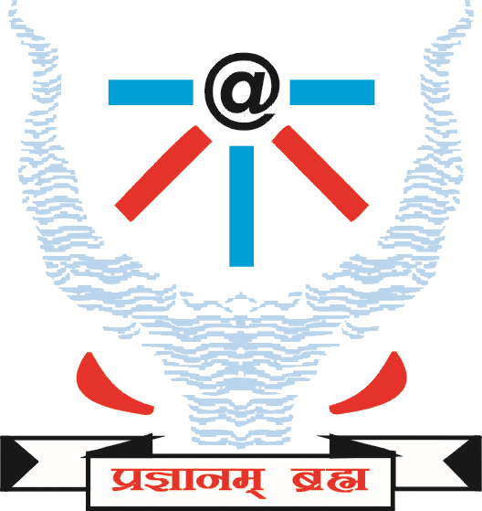

(A Campus of IIIT Allahabad)
Tikarmafi, Amethi, Sultanpur District, UP-227413
Telefax - (05368)273222
 10:02:06 PM
10:02:06 PM
Do not study the topics in depth. Cover the definitions and have a basic idea about them. All candidates must have strong knowledge about the network working in the campus such as the IP addresses, flow of network. Questions maybe asked regarding situations of network failure. The Candidates IQ will also be tested by a few aptitude questions.
The topics are -
10:02:06 PM